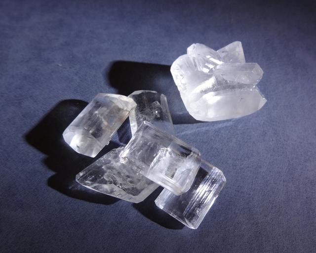

Sodium Citrate
Formula: Na3C6H5O7·2H2O  Sodium salt of citric acid, product of neutralization of citric acid with baking soda.
{kind=link}
Properties
- Crystal shape: tabular, with multiple facets. Sides develop striations.
- Stability on air: Not stable. After few days, white dehydrated spots start to grow.
Preparation
Sodium citrate is not sold in supermarkets, but it is easy to prepare from the commonly available products:
- citric acid, usually available as monohydrate C3H5O(COOH)3·H2O, and
- baking soda: NaHCO3
by reaction:
3NaHCO3 + C3H5O(COOH)3 → C3H5O(COONa)3 + 3CO2(g) + 3H2O
To prepare sodium citrate, dissolve some citric acid in water and gradually add small portions of soda. Every time you put new portion of soda, intensive reaction will start, producing lots of CO2 gas.
Continue adding soda until the reaction stops (you'll need quite a lot of it). The process looks simple, but it took several hours, because adding large portions soda makes reaction too intense, producing lots of foam. To grow the crystals on the top photo I used only 50g of citric acid, so you don't need really much of it.
Growing
There are 2 main methods of growing crystals at home:
- Cooling method.
- Evaporation method.
Cooling method
I used the following variation of this method:
- Prepare saturated solution of sodium citrate at room temperature.
- Put small portion of solid sodium citrate in it.
- Heat the solution. stirring. Additional salt dissolves, because its solubility increases with temperature. Don't worry if it has not dissolved completely.
- Cool the solution down. I used a bowl with cold water to do it quickly. You now have supersaturated solution.
- Now put seed crystal, attached to a thin thread (thin fishing line) into the solution. The crystal will start growing quickly (several mm per hour).
- After several hours, extract the crystal, put it into some temporary container (don't let its surface dry), re-saturate the solution again and repeat the process.
The biggest crystal on the following photo was grown by this method. Note that with sodium citrate it is important to put seed crystal into cold supersaturated solution. In the hot solution it will crack.
This method allows to grow big crystals very fast (several days), and crystal size is only limited by the size of the container and available chemicals. Unfortunately, fast growth makes crystal less perfect and less transparent. To make transparent crystals, you may choose much slower evaporation method
Evaporation method
Another classic method of crystal growing. Prepare saturated solution, put seed crystal into it and put the container to the corner of your table, waiting patiently until the crystal is growing. Cover the container from dust, but not tightly, to allow water slowly evaporate.
This method is much slower and requires several weeks, but the result worths it.
Safety
The compound is safe and even edible (and prone to bacterial growth).
{kind=link}
{kind=link}
{kind=link}
{kind=link}
{kind=link}